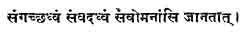
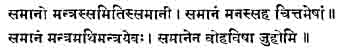

A Fresh Approach to Federation
BY V. NARAYANAN
The atmosphere in India is richly laden with ideas of federation. It has been so from the earliest times. Many people have come into India through her mountain passes and across the seas. They have come as aliens, as enemies. They have settled down after their initial victories, and become one with the many and diverse peoples already in the land. There has been no struggle for existence, no attempt to make everyone conform to a uniform manner of living. To live and to let live has been the Indian ideal. The atmosphere has been one of generous toleration of healthy emulation, of individual development without any superimposition by superior force. There has been an unconscious assimilation of the fundamental truth that, behind and beyond all apparent diversity is one essential unity. The Greeks, the Muhammadans and the Parsis have been living in this land side by side with the people of other races and creeds, without the need of any protective safeguards against the tyranny of the majority. The fact is there is no majority in India. The Hindus are heterogeneous, and it is folly to suppose that they are one and form a majority. If a sense of unity prevails among the masses, it transcends the feeling of Hindu, Muslim, Parsi or Christian, and the whole people feel as one. As for the sense of diversity and the feeling of opposition, there are as many sects and divisions within the Hindu fold is outside it, either among the Muslims or the Christians. But the Hindus, Muslims and Christians are all Indians, for, with the atmosphere of India, they have imbibed the spirit of freedom and toleration. The Indian loves liberty, no doubt, but he loves toleration more than liberty, because his love of liberty is individual as well as social. Freedom to lead one’s life according to one’s own ideas of well-being implies submission to the exercise of such freedom by others in the neighbourhood. Consequently, it is easy to form a federation of the Indian peoples with the existing divisions of Provinces and States as governmental units, for the Indians, be they Hindu, Muslim, Christian, Sikh or Parsi, are disposed to submit to a Government by themselves, provides their fundamental rights as individuals to freedom of thought, of expression and of religious worship are not touched. The troubles in India have been largely fomented by those who are ambitious to wield governmental power or to retain it in their hands, not realising that to rule over the willing masses of the Indian people must be considered a special honour and a sacred trust, and not as an opportunity for the exercise of individual power or of the amassing of property. It is this expression of the idea of trusteeship that has reconciled the masses to foreign government and endeared the Empress Victoria to the Indian people.
As Sir William Le-Warner pointed out, "the inhabitants of India have from time immemorial possessed certain traits of character and customs conducive to union, which Western countries have lacked. To a large extent, men have been accustomed to look beyond themselves, and to feel that they are members of a wider circle than that of their own separate families. The spirit of mutual helpfulness and the sense, shared by all classes, of dependence upon government and a higher providence, are influences which even today (1903) tend to draw the people of India towards one another." Even the latest non-official apologist for Great Britain, Mr. Rushbrook Williams, admits the basic unity of India in these words: "In normal circumstances, particularly in the villages and small towns, Hindus and Muslims are neighbourly enough; and although their habits and ways of life present extreme contrasts, so that the Muslims generally prefer to live all together in a separate street or locality, they exercise a good deal of mutual tolerance."... Talking of Hindu-Muslim unity, I am reminded of the Vedic parable about the struggle for supremacy among the five essential parts of the human body. The quarrel was between the tongue, the eye, the ear, the mind, and the breath. If the Hindu element in India be compared with to the mind, the Muslim element may be compared with the breath. The passage runs in these words:
"The breath, when on the point of departing, tore up the other senses, as a horse going to start might tear up the pegs to which he is tethered. They carne to him and said, ‘Sir, be thou the master; thou art the best among us. Do not the part from us.’ And so the fight ceased. And people do not call them the tongues, the eyes, the ears, and the minds, but the breaths. For, breath are all these.
The ‘sporting offer’ of Sri Rajagopalacharya shows that India feels as an organic whole, willing to sacrifice, if necessary, un-essentials in order to preserve her organic life.
But this view that India is one nation is not accepted by the advocates of Pakistan, who claim that Muslims in India form a separable and separate nation. Dr. Ambedkar, in his latest book, ‘Thoughts on Pakistan,’ lends weight to this view. He says, "It is no use contending that there are cases where a sense of nationality exists but there is no desire for a separate national existence. Cases of the French in Canada, of the English in South Africa, may be cited as cases in point. It must be admitted that there do exist cases where people are aware of their nationality, but this awareness does not produce in them that passion which is called nationalism. In other words, there may be nations conscious of themselves, but without being charged with nationalism. On the basis of this reasoning, it may be urged that the Mussulmans may hold that they are a nation but they need not on that account demand a separate national existence. Why can they not be content with the position which the French occupy in Canada and the English occupy in South Africa? Such a position is quite a sound position."
Dr. Ambedkar assumes that the Indian Muslims have a separate nationality and constitute a nation by themselves. What constitutes a nation? We have the answer of Mr. Muir in his book on ‘Nationalism and Internationalism.’ A nation is defined as "a body of people who feel themselves to be naturally linked together by certian affinities which are so strong and real for them that they can live happily together, are dissatisfied when disunited, and cannot tolerate subjection to peoples who do not share those ties." The Indian masses do not contemplate the separation of the Hindu from the Muslim or of either from the Christian. They have all been living together, and happily. They would certainly be dissatisfied if disunited. No doubt, strong local patriotisms exist, based, through historical circumstances, upon deeply marked differences in race, culture and language. "But," says Mr. Rushbook Williams, "even if the different peoples of India do not, on that account, always see eye to eye on every issue, they possess quite sufficient consciousness of common unity to realise that they are very different from the British." These facts therefore are proof that India is a nation. The attempt to cut it into two nations, Muslim and non-Muslim, reminds one of the dispute between two women about the possessing of a child. The woman who wants or agrees to the child being cut into two is certainly not the mother of the child, for the child truly belongs to her who agrees that it might be handed over to the other claimant. The moral is that the Congress, not the Muslim League, is the rightful mother of India’s millions.
The history of India from the earliest times proves that the Indian people have always instinctively felt as one nation. The old Indian idea of a Rajasuya emphasised the concept of a federation of the fifty-six traditional States of India under one ‘umbrella.’ This ideal was adopted by the Moghul Emperors. It was the propelling force of the Maratha federation. And it is this sense of innate unity which permeates the masses in India, be they Hindu, Muslim, Sikh or Christian, which welcomed the coming of the United East India Company to power, and facilitated the affiliations of the Indian States which, before the days of Lord Dalhousie, were all together more than half of India. Volumes have been written about the place of Islam in Indian politics. Islam is the religion of no particular nation, and its followers form parts of several nations in Asia, Africa and Europe. Islam is essentially a religion of peace and does not advocate the spread of the faith by use of force. Nor does Islam confer on her adherents any special benefits or privileges. It has been pointed out that the Koran urges perfect equality of treatment between the faithful and the infidels. Nor does the Prophet object to submission by the Muslim to temporal power if it be non-Muslim. On the contrary, he advocates it as his primary duty. If the Muslim invaders from Eastern Asia into India or Europe carried everything by the sword, they fought as blindly among themselves as against those of alien faiths. Timur, and later on Baber, fought against brother Muslims before they fought the Indians, Muslim or non-Muslim. It is a wrong reading of history to state that the Muslims fought a successful Jehad when they established an Empire at Delhi. They, like others before them, fought more to bring all India under one sway than to spread their faith. But the fight for place, power and influence, not infrequently assumes the disguise of a religious war to appeal to, and win the support of, the masses of their co-religionists elsewhere. So it has been with the Europeans also. When the European traders found themselves in power in India, they appealed for moral and financial support from Europe on the plea of spreading the Christian Gospel in India. The same twist was given to Macaulay’s plan of Western education. As Mr. Rushbrook Williams says, "The theory underlying the plan actually adopted was this. It was assumed that, when once the literate classes had been educated in English, Western learning, of which English was the medium, would gradually filter down to the masses. Eventually everyone would be educated, everyone would be westernised, and–as a result–everyone would become a Christian."
Let us consider another authoritative definition of nationality. Mr. A. N. Halcombe refers to the concept of nationality thus in ‘The Foundations of the Modern Commonwealth’:
"A corporate sentiment, a kind of fellow feeling or mutual sympathy, relating to a definite home-country, and binding together the members of a human group, irrespective of differences in religion, economic interests or social position, more intimately than any other similar sentiment…." Differences in language, race or religion do not negative the existence of the national spirit; on the contrary, they not only indicate its existence but endow it with irrepressible vitality. A number of languages may be spoken by the same nation, Three languages are used in Switzerland, "The churches," says Mr. Buell, "would not serve as the unthinking instruments of political jingoes in the future. The growth of religious toleration is gradually taking the religious factor out of national as well as international politics." Nor is race the determining factor. The British nation is composed of various races. Ethnology has not become an exact science; and in recent years considerable doubt has been thrown on the theory of an Aryan invasion of Dravidian India or of an earlier invasion of India by the Dravidian race. The doctrine of self-determination for racial minorities has been the bane of modern European politics. "Literally interpreted," says Mr. Buell, "the doctrine of self-determination would sanction the resistance of any minority to the will of the majority. Extended still further, it would authorise any individual to resist the law. Where should the line be drawn between a real nation and mere particularism?" In another place, the same author says: "In the twentieth century, self-determination has become a disintegrating force which, uncontrolled, will lead to very serious consequences for the peace of the world and for the welfare of the nations themselves."
At the end of the last war, President Wilson declared: "People may now be dominated and governed only by their own consent. Self-determination is not a mere phrase. It is an imperative principle of action which statesmen with hence-forth ignore at their peril." Excessive regard paid to this idea of self-determination has led to the rise of small States in Europe, which have become mere pawns in the game of high politics. Richness of composite national life is lost, as well as the neighbourly toleration of the major State out of which the new small States were carved. The desire for separation and segregation arises because undue emphasis is laid on the unity of language, race or religion as the primary requisite of a nation. Another misconception relating to nationality is the belief that the existence of a nation as nation depended on force, and that its neighbours are all out to destroy it. This mutual distrust of neighbours is giving place, thanks to the present war, to trust and friendly co-operation with neighbour nations. Europe is realising the futility and hollowness of the doctrine of self-determination, which only serves to bring out the acerbities of all isolated groups into prominence. The emphasis is now shifting to the neighbourly spirit of accommodation, and the truth is slowly dawning that good social life results in ineffable calmness of mind arising out of peaceful co-operation with fellow-beings.
If it is neither race nor religion nor language that makes a people a nation, the question arises: how is a nation born? A nation is born of geography, and grows with its history, developing characteristics of its own out of its geographical unity and historical continuity. ‘In India and the West,’ Mr. Marvin points out that "India, like England, has won her way through centuries to a growing sense of unity based on subsantial facts of geography, history and the actual conditions of life and thought." Vast and diverse as the peninsula is, it yet has geographical features which mark it out as a unit. These alone have made possible the partial political unity achieved by the Moghuls, and the much more complete organisation of recent times. "Nationality," says Mazzini, "ought only to be to humanity that which the division of labour is in a workshop–the recognised symbol of association; the assertion of the individuality of a human group called by its geographical position and its traditions to fulfill a special function in the work of civilisation." "The characteristically Indian point of view," according to another modern writer, "may be called the socialistic point of view. It means that the needs, wishes and character of the individual are subordinated to those of society, and that, in general, an individual effaces himself in order to subserve, to the extent necessary, the needs of the family, tribe, caste, clan or other aggregate which forms the unit of society."
Every nation is said to possess certain special characteristics. The Germans have been marked by a thoroughness in scholarship and a willingness to submit to the exactions of the State to a greater extent than other peoples. The British, it is said, are characterised by their ability to effect political compromises and by their disdain of political labels. Similarly, we can characterise the Indian spirit as a spirit of tolerance embodied in the maxim of ‘live and let live’ and in the commandment, ‘Love thy neighbour as thyself.’ Mr. Rushbrook Williams sees this spirit "in the determination to respect the rules of one’s own caste or creed and at the same time to respectfully avoid infringing the rules of the neighbour’s caste or creed." This characteristically Indian spirit is sustained by the mystic perception, by the Hindu and the Muslim alike, of the truth that all are equal before God and deserve the triple freedom of thought, of speech and of worship, each in his own way, so long as he does not aggressively affect his neighbours. This fact has led some casual observers to imagine that Indians are international in outlook, and that they have no national feelings, no patriotism at all. But true patriotism is geographical. "While perhaps men should accept obligations, world-wide in scope, in practice they inevitably confine their service to those about them, whom they know." And there are limits set to the feeling of patrotism. "Ask yourselves," says Mazzini, "whenever you do an action in the sphere of your country, ‘If what I am doing were done by all and for all, would it advantage or injure humanity?’ If your conscience answers, ‘It would injure humanity,’ desist–desist even if it seems to you that an immediate advantage for your country would ensue from your action." This advice is only a paraphrase of the creed of non-violence that through the ages India has set its heart upon. And when other nations act in accordance with this advice in the wake of India, the purpose of the existence of India as a nation would have been fulfilled. The truest national spirit is that which is born, as in India, entirely out of the geographical unity of the country and the very human desire to be at peace with one’s neighbours without the adventitious aids of the unities of race, religion or language.
If Indian history be read aright, it would be evident that, from the earliest times, the people of India, whether they were invaders who had settled in the country or the earlier inhabitants, have all had a sense of a common home-land which prevailed over their local patriotisms and impelled them again and again to struggle for the establishment of a central government wherein their local patriotisms could be sublimated into national feeling. Sovereign powers therefore must be conceived as existing in the peoples of the different provincial units who agree to part with their sovereignties, so far as it is necessary, to the creation of a federal government welding the several provinces into one Indian nation both for international and for inter-provincial purposes. That the formation of the local governments have been haphazard and due to fortuitous circumstances, as in the case of the British Indian provinces and the Indian States, does not negative the existence of the separate personalities of these provinces and States, which would be hurt by any re-alignment on racial, religious, linguistic or other rational ideas of formation of States. In his book on ‘International Relations,’ Mr. Buell points out that so many complications are involved in changing boundary lines that much is to be said in favour of the principle of status quo; and he concludes that "unless the inhabitants involved are denied the right to retain their national traits, there is little justification for the violent alteration of boundary lines." Neighbourly life under a common government, whether of a province or of a State coupled with the inherent accommodating spirit of the people, has resulted in the development of intense local attachments which would not willingly submit to partitions and reallotments of districts on what may prima facie appear rational grounds of religious differences as in Bengal and in the proposed Pakistan, of language differences as in the proposals of linguistic provinces, or of administrative convenience as in Sind, or of alleged racial differences as in the proposed Dravidastan. In the new Federation that is to be India, schemes of realignment of the provinces or the states which form the constituent units, on considerations of race or religion or linguistic or administrative convenience, have no place. The approach to Federation should be cleared of all disputes and dissensions that might crop up, if these considerations are allowed to prevail. The fresh approach to Federation that I desire to advocate is the old approach envisaged by Lord Harding’s Despatch, cleared of the jungle of complications that have grown with the discussions of the last twelve years. The Despatch of the Government of India of 1912 stated:
"The time was coming when India would be composed of a number of autonomous provinces somewhat similar to the different states of the American Union with a Federal Government directing and controlling them all, in all matters of inter-state or foreign policies and administration." After stating the difficulty of the problem, the Despatch affirmed: "The only possible solution of the difficulty would appear to be gradually to give the Provinces a larger measure of self-government until at last India would consist of a number of administrations autonomous in all provincial affairs, with the Government of India above them all and possessing power to interfere in cases of misgovernment, but ordinarily restricting its functions to matters of imperial concern." The same idea finds clearer expression in the Montford Report:
"Our conception of the eventual future of India is a sisterhood of states, self-governing in all matters of purely local interest. Over this congerie of states would preside a central government increasingly responsible to the people of all of them; dealing with matters both internal and external, of common interest to the whole of India; acting as arbiter in inter-state relations and representing the interests of all India on equal terms with the self-governing units of the British Empire." And the attitude of the rulers of the Indian States appeared equally clear from the statement made by the ruler of Alwar in 1922:
"My goal is the United States of India, where every province and every state working out its own destiny in accordance with its own environment, its own tradition, history and religion, will combine together for imperial purposes, each subscribing its little quota of knowledge and experience in a labour of love freely given for a higher and a nobler cause."
The complications arose from the Round Table Conferences and the elaborate proceedings of the Joint Committee of the Houses of Parliament, which contrasted so unfavourably with the quick progress of the Montford reforms and led the people of India seriously to doubt whether the British Government meant business. But nothing is an unmixed evil. The Government of India Act of 1935, which satisfied no group or class of Indians, has by setting up a sort of autonomy in the Provinces made the path easy for Federation; for the premiers of the British Indian Provinces are analogous to the rulers of the Indian States and can join them as equals in status and agree to a scheme of federation. To them the people of India may well address their prayer for concerted action on the lines of the old Vedic prayers:

Come together, speak in harmony, may your minds see alike.’

‘Become one conclave, deliberate as one body, and let your minds and thoughts be concordant. I invoke you all together, I worship you all with equal offerings.’
To this approach to Federation through co-operation, there are difficulties raised from all sides. These difficulties arise from two assumptions: that the sovereignty of the British Indian Provinces vests in the British Parliament, and that the sovereignty of the Indian States vests in their rulers; these assumptions require therefore to be clearly examined. The British Indian Provinces and the States were alike under the sway of the Moghul Emperor at Delhi whom the people looked up to as the emblem of their inherent sovereignty. Like the States, the Company were feudatories of the titular sovereign of India, and entered into treaties with the several States in their capacity as virtual rulers of the several Provinces in their possession. Even before the assumption of sovereignty over the whole of India by Empress Victoria, Parliament had declared that it considered itself as the trustee of the Indian peoples. The proclamations of successive sovereigns and the statements of the Viceroys and Secretaries of State have made no distinction or difference between the peoples of the British Indian Provinces and those of the Indian Sates. The Queen’s proclamation declared:
"We trust that from the highest to the humblest all may feel that under Our Rule the greatest principles of liberty, equity and justice are secured to them, and that to promote their happiness, to add to their prosperity and to advance their welfare are the ever present aims and objects of Our Empire."
The new year message of King Edward VII in 1903 stated:
"To all my feudatories and subjects throughout India, I renew the assurance of my regard for their liberties, of respect for their dignities and rights, of interest in their advancement, and of devotion to their welfare, which are the supreme aim and object of my rule."
It is quite a debatable question whether the sovereignty of all India, which vested in the Crown, passed on to the House of Commons, when the British people effected the transfer of real sovereignty of the British Isles from the other two joint-holders of it, viz, the Crown and the House of Lords, exclusively to the House of Commons. The Dominions have successfully established that the sovereignty of each Dominion passed back to it when the King of Great Britain and the House of Lords suffered their sovereign power to pass on to the elected representatives of the people. It may similarly be argued that the King-Emperor alone represents the sovereign power in India which belongs really and justly to the Indian people. The point was taken by the Viceroy Lord Curzon when he appealed to the King-Emperor over the head of the British Cabinet, though it was not pushed to a decision. But the doctrine of trusteeship first propounded by Burke in the course of the impeachment of Warren Hastings implied the recognition of the inherent sovereignty of the Indian people; and it is again implied in Clause V of the Preamble to the Government of India Act of 1919, which runs as follows:
"And whereas concurrently with the gradual development of self-governing institutions in the Provinces of India, it is expedient to give to those Provinces in provincial matters the largest measure of independence of the Government of India which is compatible with the due discharge by the latter of its own responsibility...."
After the last war, it was recognised on all hands that India had no further need for this trusteeship, and that she was fit to occupy an equal place with Great Britain and the Dominions not only in the counsels of the British Common-wealth of Nations but in the counsels of the world as well. She had her place in the counsels of the Empire and also in the League of Nations, although her place was filled for her by her trustee. Pessimistic views regarding the future of India, which were in vogue both in England and in India early in this century, had given way to a wave of optimism justified by the course of events after the last war had ended.
This change in temper is best illustrated by the change in the tone of the Right Hon’ble V. S. Srinivasa Sastri’s speeches before and after the Great War. In 1912, he said:
"Even if we imagine, what is certainly impossible, that by an extraordinary act of self-denial on their part, all European and Asiatic powers left us to ourselves, and even if we imagine further that, by an extraordinary stroke of good luck, we settled down to a career of peaceful and ordered government, it is fairly certain that we shall divide into innumerable little States which it would be impossible to weld together into any federation, for the secrets of federation are still held from us." But, in 1919, he felt that Indians were entitled to collaborate on equal terms with Englishmen in the framing of a constitution for India. And he continues to feel the same today. It is unfortunate that, while with the progress of India towards self-government such fears about the future have given place to sane and robust optimism among all classes of Indians, Britishers resident in India, like Mr. Macintosh of Bombay, pompously trot out such fears and say that, to them, "unconditional abdication by the British Government seems unthinkable and completely divorced from that sense of responsibility and realism which, the war has taught them, must be possessed by all forms of Government if the people those Governments represent are to retain their liberty." It is to such as these that Edward Carpenter addressed the following words:
"To place a nation squarely on its own base, spreading out its people far and wide in honoured usefulness upon the soil,
"Building up all uses and capacities of the land into the life of the masses so that the riches of the earth may go first and foremost to those who produce them and so onward into the whole structure of society.
"To render the life of the people clean and gracious, vital, from base to summit and self-determining–
"What a pleasure!"
But this supreme pleasure of starting a nation on its independent career will be denied to the British people so long as they do not recognise the fundamental truth that one cannot both eat the cake and have it. There is, as the authors of Federal India point out, an essential incompatibility between Parliamentary control and federalism which implies sovereignty in the constituent States and Provinces. Unless Parliament takes its hands off entirely from the federal machine, federation will be only another engine of outside oppression, as the Provinces, in partially surrendering their sovereignty to a central authority, cannot possibly have the sense of security and complacency arising from the consciousness that they surrender it only to themselves. It is a trite saying that of all forms of foreign rule, government by a foreign democracy is the worst. "Now if there be a fact to which all experience testifies," says Mill in his Responsible Government, "it is that, when a country holds another in subjugation, the individuals of the ruling people who resort to the foreign country to make their fortunes are, of all others, those who most need to be held under powerful restraint. They are always one of the chief difficulties of the Government. Armed with the prestige and filled with the scornful overbearingness of the conquering nation, they have the feelings inspired by absolute power without its sense of responsibility." As more and more evidence of the callousness of the present Secretary of State for India is forthcoming, the truth of the remarks of Jowett about the British temperament is becoming more and more obvious. Jowett says: "The English and Indian tempers can never harmonize. The Englishman has no sympathy with other nations. He cannot govern without asserting his superiority. He has always a latent consciousness of difference of colour." The vision of Edward Carpenter seems to be likely to prove prophetic:
Blind, fooled, and staggering from her throne, I saw her fall,
Clutching at the gaud of Empire;
And wondering, round her, sons and daughter-nations stood–
What madness had possessed her;
But when they lifted her, the heart was dead,
Withered within the body, and all the veins
Were choked with yellow dirt.
We have seen that the difficulties of the Britisher are mostly of his own creation. Similarly, the difficulties regarding the Indian States exist largely only in the imagination of the rulers of these states and their advisers. They do not realise that the days of autocracy are gone, and that the engagements and treaties with the East India Company, which were later on accepted by the British Crown, are in reality treaties between the people of their States represented by them and the people of the British Indian Provinces represented by the Crown. If the Parliament has no jurisdiction over a particular State, it is all the more evident that the Paramount Power vested in the Crown and exercised by the Viceroy is derived from the people of the British Indian Provinces and the other States so far as external affairs are concerned, and from the people of that State so far as interference with the internal administration is concerned. Lord Reading put it mildly when he wrote to His Exalted Highness, the Nizam, that it was the right and duty of the British Government, while scrupulously respecting all treaties and engagements with the Indian States, to preserve peace and good order throughout India. In recent years the Indian States are encouraged to assume an attitude of independence when authority cannot compel but only treaty and argument persuade. Where was this sense of independence when the Viceroy, on the King Emperor’s behalf, exercised not merely full control over foreign relations and relations with British Indian Provinces and with the other States but interfered with the internal administration as well through the agency of his Political Agents? The relationship of the Viceroy towards the States has been exactly the relationship of a Federal Government towards its constituents, with this difference that, while the Provinces have some voice in the Government of India, the States have no voice in the administration of the political department of the Viceroy, so that the ruler of an Indian State is in some respects in a worse position than a British Indian subject. He cannot appeal to the Parliament against the autocratic decisions of the Viceroy. He cannot hold property in British India without the Viceroy’s consent. And until the proclamation announced the intention of the Paramount Power not to interfere with the right of adoption, no adoption could be made to a sonless ruler without the consent of the Viceroy. The position of the Indian Princes bears a strong resemblance to the position of the Barons in England under the Norman Kings. They too claimed, without much success the right to unrestrained rule over the serfs and tenants resident in their baronies. In course of time they recognised their proper position as leaders of the people and obtained for their benefit the Magna Carta. Will the rulers of the Indian States urge that the Provinces should attain to that measure of local government which they possess in their States and consent to submit in all matters of all-India nature to a Federal Government to the extent to which they now submit to the autocratic demands of the Viceroy? If they do not willingly do so, it is possible for the British Government to follow the example of Premier Asquith who coerced the House of Lords with the threat of creating new Lords, and to threaten to set up the different Provinces as independent States and vest the Paramount Power in a federation of those States. Such a threat would not be improper and would be quite in consonance with facts and with the principles of natural justice. For the Provinces have all along been feeling themselves separate units in British India. The idea behind the provincial loans has encouraged the growth of this feeling. When the Viceroy was at Calcutta, Provinces other than Bengal were largely left to themselves without undue interference in their affairs. The Governments of these Provinces have developed each in its own way and have represented their individual views strongly in matters relating to the Central Government also, thus paving the way for a federation of these Provinces. As Sir Shafaat Ahmed Khan observed, when delivering the Right Honorable V. S. Srinivasa Sastri Endowment Lectures:
"From the point of view of provincial rights and liberties, it might be stated that the Provinces had each been welded into a unity of feeling and tradition, that justified us in regarding them as possessing individuality. And they have developed certain characteristics which marked them off from one another."
A third source of difficulty is the opinion of certain Britsh Indian leaders that the Indian States do not deserve their co-operation in their endeavour to build a federal constitution. But it must be remembered that, for the purpose of federation, the rulers are placed in the same status as the Premiers of the Provinces, as they really represent, though arbitrarily, the peoples of the respective States. "These peoples," as Sir Shafaat Ahmed Khan points out, "belong to the same race as their neighbours in the British Indian Provinces." They are inspired by the same national sentiments and are sustained by the same ideals for their motherland and have the same outlook on life. There is no Chinese wall that marks them off from the British Indians. The people of the two parts of India intermingle and intermarry. Trade is common, and social intercourse close and constant. The reluctance of the British Indians to associate with the Indian States is mostly due to the fear that the British Government will buttress itself with their rights of paramountcy, making them tools of Great Britain in the federal government. It is therefore essential that Parliament should disown such intention expressly and vest the residuary sovereignty in the people of the Provinces and the States respectively.
All the above difficulties exist. They can be removed, if they will not vanish of their own accord, by bestowing sovereign power jointly on the Provinces and States without insisting on an agreement among the several leaders in the Provinces and the rulers of the States. We have seen that differences in race, language or religion do not affect the true national spirit and the growth of corporate sentiment out of the geographical conditions of the country and the circumstances of its history. The geographical conditions have made India a nation and the circumstances of history have made the Provinces and the States individual units, each with its own special characteristics developed through the passage of years under a common administrative authority. These constitute therefore the natural units of the federation of India. The differences in detail that prevail in these Provinces and States are often trotted out for the purpose of arguing that there is no Indian nation. Those who argue thus refuse to see the wood for the trees. They would not see integral India but only its isolated parts. Mr. Marvin states the truth when he says, "Only in some form of federation can the two aspects of Indian nationality find permanent reconciliation–the greater rationality due mainly to Hinduism and British organisation, and the smaller due to language and local patriotism. If federation was the natural solution for the problems of the United States, it will appear even more necessary to secure both an actively local interest and the new national harmony of the three hundred millons of India." The Indian Federation may be likened to a concert: "In a concert, the individual notes are not only dissimilar but are different; and yet they all contribute to a common and harmonious effect which can never be attained by unity or uniformity." The most practical way to achieve such a Federation is to build with the existing Provinces and States as foundations. To dig at the existing foundations or to dispute about the alterations that theoretical enginering might suggest is to postpone the building indefinitely. And to all the parties concerned in building the Federation, of India. Britishers, British Indians, and Indian States, the words of Edward Carpenter will come with special appeal:
Except Love build the house,
They labour in vain who build it.